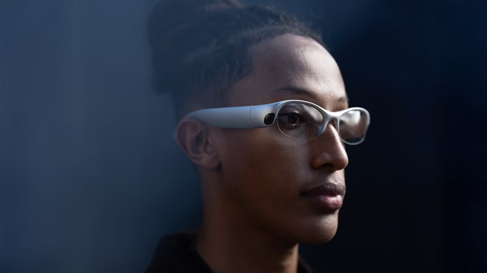
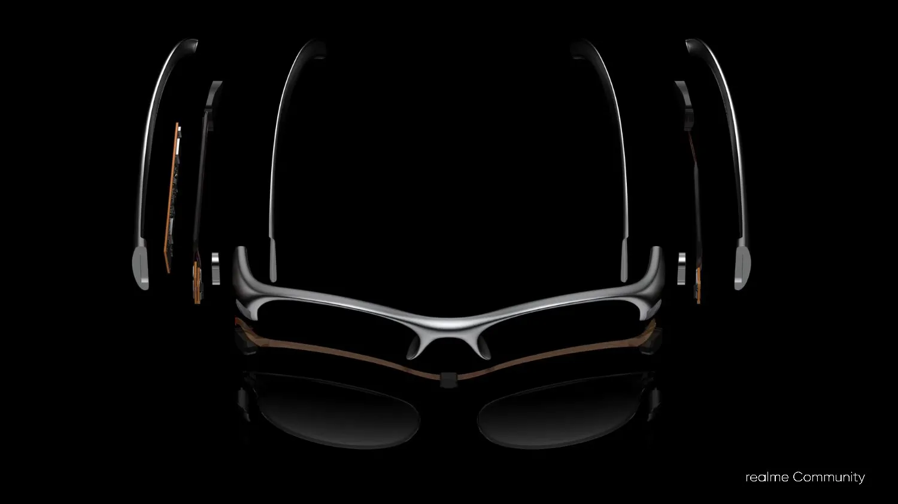
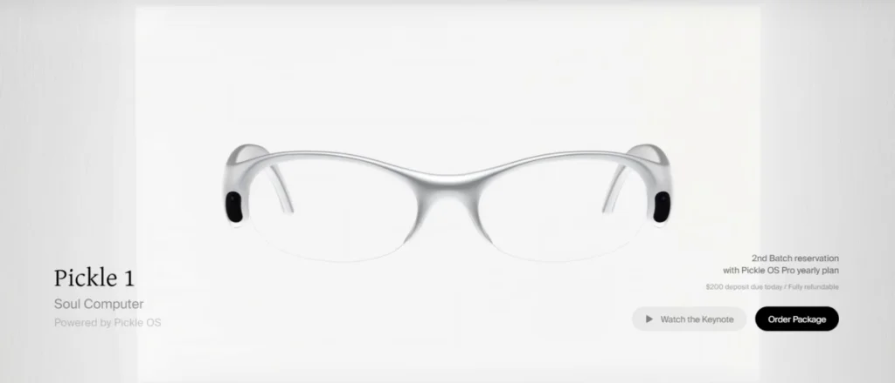

Gafas de Realidad Aumentada ultraligeras de 68 gramos que superponen datos, graban flujos de trabajo e integran un asistente de voz predictivo con cancelación y procesamiento local.

Pantalla binocular Micro-OLED a todo color para ver información superpuesta sin perder contexto.
Procesador Qualcomm Snapdragon optimizado para realidad extendida, IA local y reconocimiento espacial.
Pickle OS convierte experiencias cotidianas en recuerdos interconectados que la IA puede recuperar.
Huella en la patilla, datos cifrados localmente y sin uso de información personal para entrenar IA externa.

Pickle observa, registra y recuerda de forma continua el entorno del usuario mediante cámaras, micrófonos y sensores. Después de al menos tres horas de uso diario, la IA aprende hábitos, predice necesidades y puede automatizar acciones como reservar un taxi, sugerir un restaurante o recuperar datos de tu historial personal.
